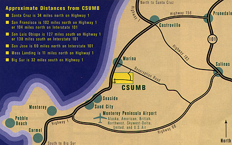
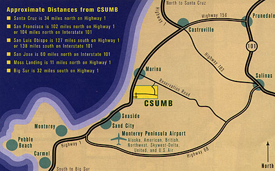

Directions to the Social and Behavioral Sciences Center
Hwy 1 North/South
Take the CSUMB/Fort Ord Main Entrance
Left on Second Avenue
Right on Third Street
Right on Fourth Avenue
Left on First Street
We are located on First Street in Building 17